Water Service Providers
Caption: Phoenix-Metro Water Providers.
Explaination: We model 33 Water Providers in the Phoenix Metropolitan Area. These water utilities cover approximately 95% of the people in the Phoenix Active Management Area (As defined by the Arizona Department of Water Resources: A geographic area that has been designated pursuant to A.R.S.§ 45-411 as requiring active management of groundwater). Please Note: these utility boundaries delineate future (projected) buildout.
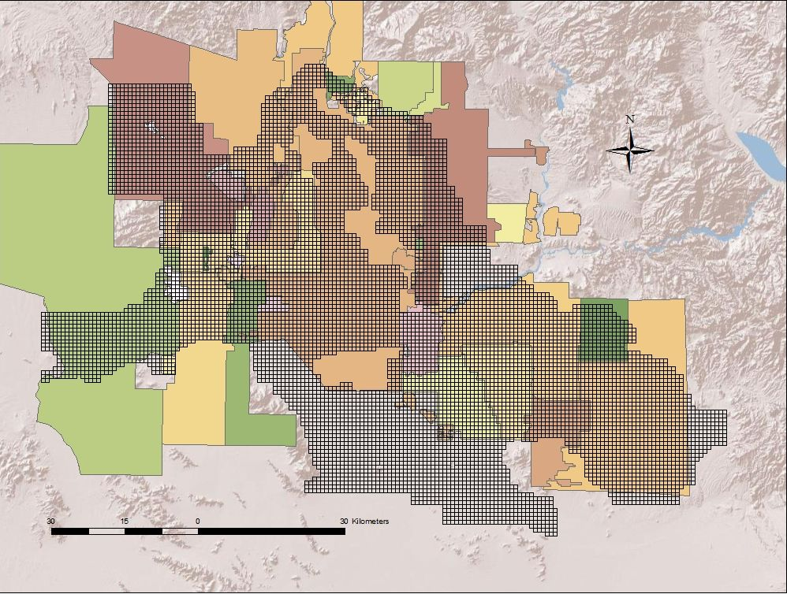
Arizona State University,
Decision Center for a Desert City, The Brickyard Orchid House, 21 East 6th Street, Tempe, AZ 85287-8209
Water Supply and Demand
Caption: Water Supply SanKey Flow Chart.
Explaination: Water supplies for the Phoenix AMA are partitioned into end use.
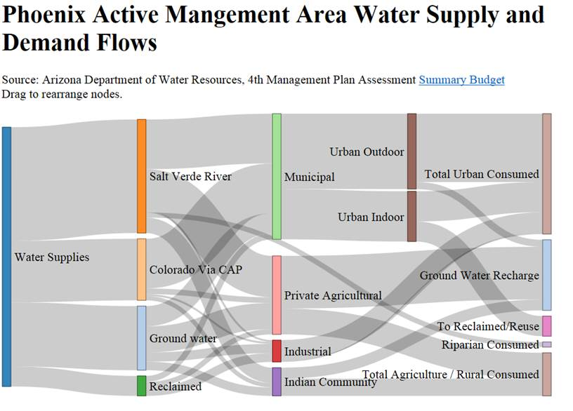
Caption: Colorado and Salt-Verde River Basins, and the CAP canal.
Explaination: Surface water used in South-Central Arizona comes from as far away as Wyoming and Colorado as well as more locally from our own watershed located on the Mogollon Rim.
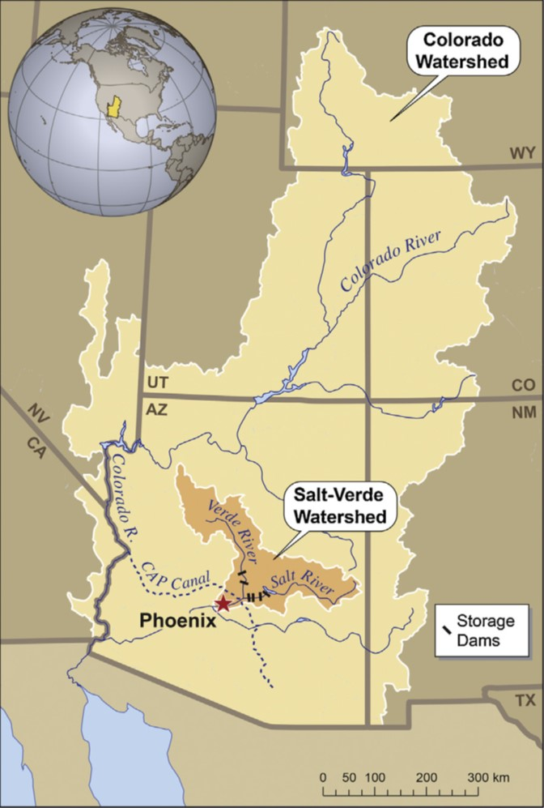
Model Structure
Caption: The WaterSim Framework.
Explaination: The WaterSim framework consists of a FORTRAN module (dll) linked to a C# (C-Sharp) "wrapper" dislayed in the image below. The C# libraries control the model, setting the user inputs and extracting the model outputs for data storage or for graphing. The individual modules of the FORTRAN model are designated in the run sequence.
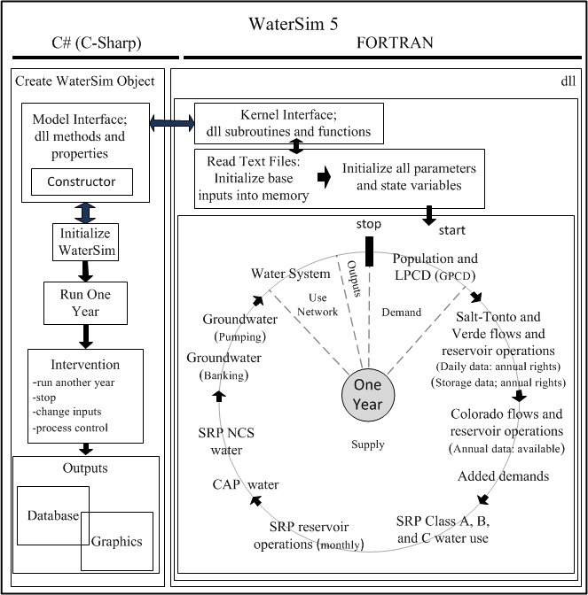
Caption: The WaterSim 5 Water Supply Flow Diagram.
Explaination:
WaterSim uses water demand to drive the water supply pathways. The various water supply sources are depicted in the model diagram.
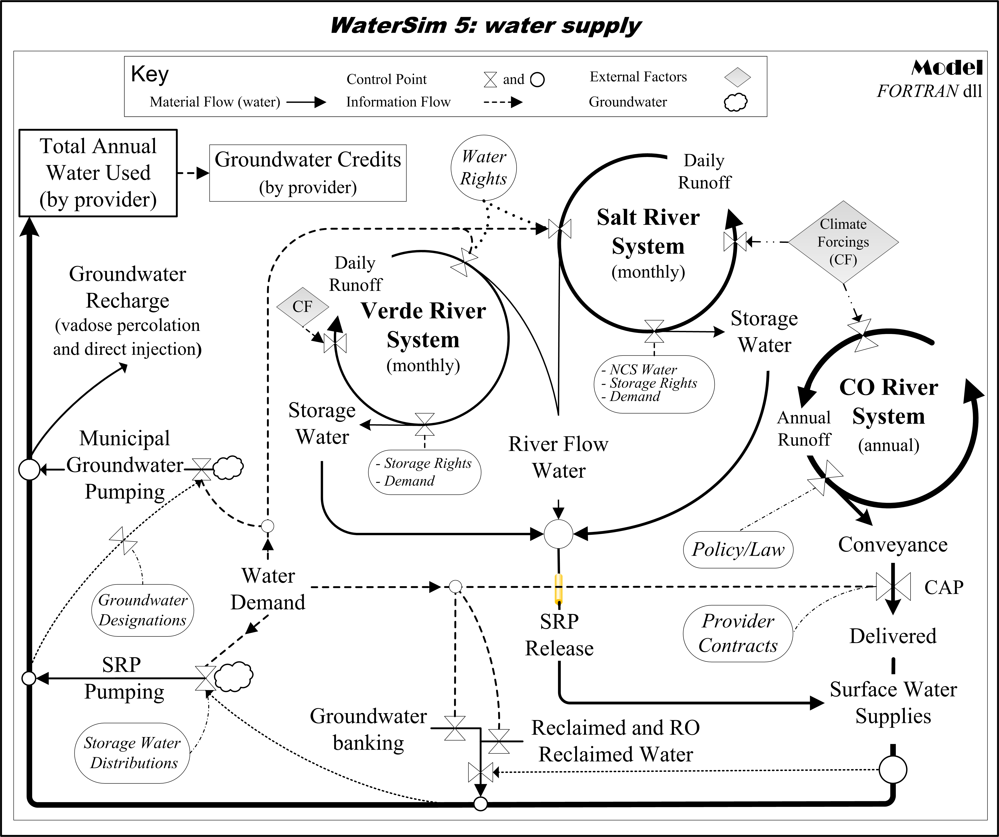
Caption: City-model water use network.
Explaination: Each water provider has a separate parameterization of the various water pathways. And, the network nodes (specific infrastructure elements) vary among the water providers. Please note that version 5 of WaterSim does not have rainwater harvesting/stormwater capture.
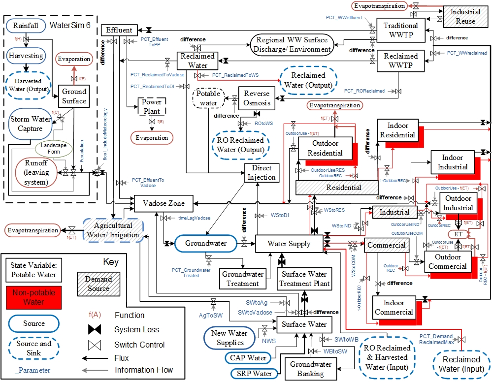
Caption: Browser, web service, API, and model configuration.
Explaination: The WaterSim Suite is comprised of several interacting components accessed through a web browser. The information flow and data requests are illustrated with arrows below.
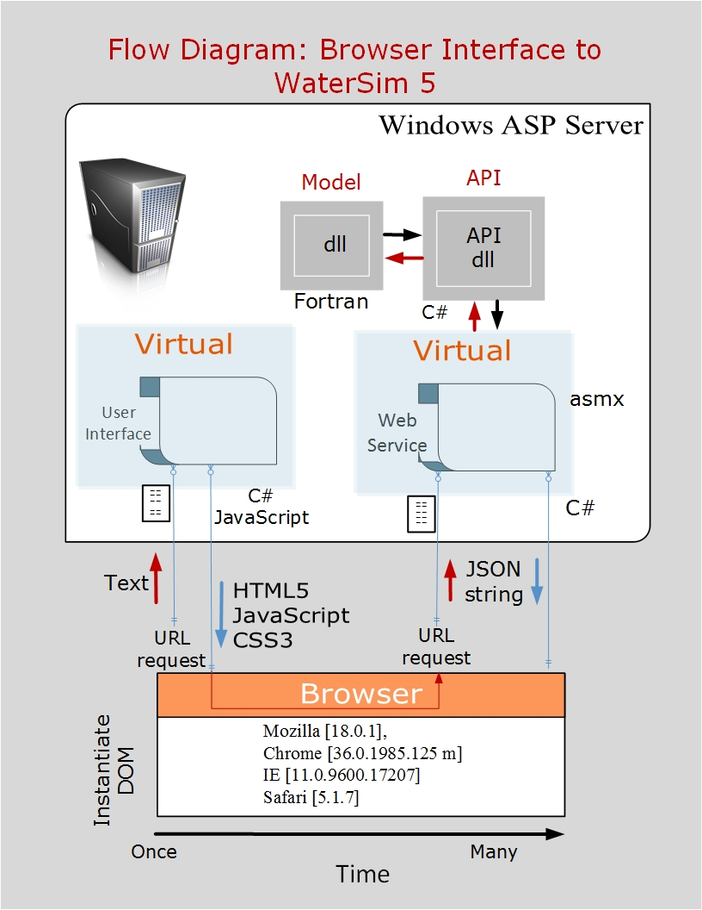
Model Verification and Validation
Caption: Calibration and Validation of WaterSim 5; Verde River.
Explaination: These are results from the initial parameterization and validaiton of the reservoir storage dynamics (A) on the Verde River System and simulated evaporation (B). Here the outputs reflect the total volume in the two Verde reservoirs (Horseshoe and Bartlett)for the year 2000 to 2012. Reservoir level data courtesy of SRP.

Caption: Calibration and Validation of WaterSim 5; Salt River.
Explaination: The panal below depicts water storage (A) and evaporation (B) on Lake Roosevelt, the largest of the reservoirs on the Salt-Tonto River System and the other three reservoirs combined (C) and (D).

Caption: Lake Powell and Lake Mead Calibration and Validation.
Explaination:
The figure shown below depicts lake evaporation (insert) and elevation on Lake Powell (A) and Lake Mead (B). Simulations from WaterSim 5 were compared against simulations from the Bureau of Reclamations CRSS simulation model. These data were courtesy of Don Gross (ADWR).

Model Outputs
Caption: Mega-Drought and WaterSim 5; Sensitivity analyses of possible policies.
Explaination:
This figure examines the sensitivity of various policies on the years of adequate groundwater supplies.
Adapted From: Gober et al. (2016), Urban adaptation to mega-drought: Anticipatory water modeling, policy, and planning for the urban Southwest.
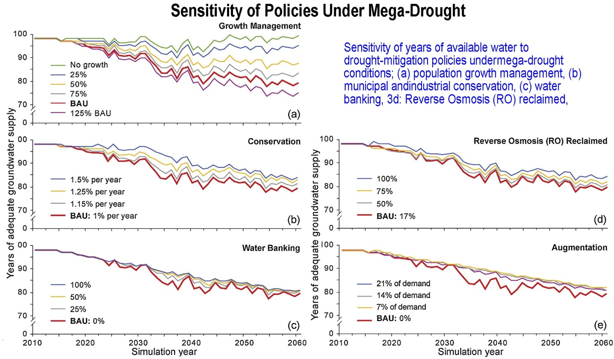
Caption: Mega-Drought and WaterSim 5; Additive policy effects on groundwater supply.
Explaination: Incremental improvement in groundwater supplies with policy implementation for a 25% reduction in projected growth for the Phoenix Metro Region and the cummulative effect of implementing various policies as they influence the number of years of adequate groundwater supply (for this projected reduction in population).
Adapted From: Gober et al. (2016), Urban adaptation to mega-drought: Anticipatory water modeling, policy, and planning for the urban Southwest.
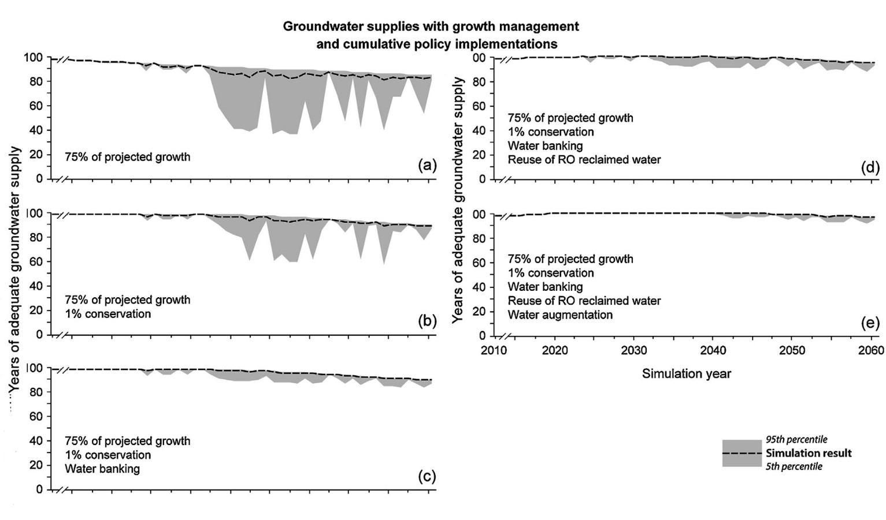
Caption: Mega-Drought and WaterSim 5; Regional Simulations of Groundwater.
Explaination: Regional changes in groundwater and years of adequate groundwater supply under business as usual scenarios and with Mega-drought.Adapted From: Gober et al. (2016), Urban adaptation to mega-drought: Anticipatory water modeling, policy, and planning for the urban Southwest.
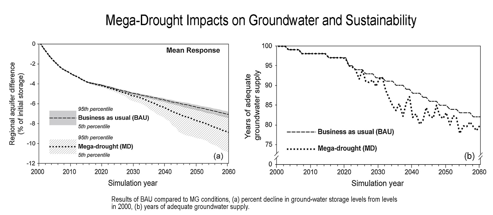
Caption: Climate Scenarios and WaterSim 5; Scenario planning analyses.
Explaination: With WaterSim 5 we can examine the regional response in the aquifer over time, groundwater pumping, and groundwater credits under various water policy management options. These simulations represent one analysis using 11,500 scenarios.
Adapted From: Sampson et al. (2016), Anticipatory modeling for water supply sustainability in Phoenix, Arizona.
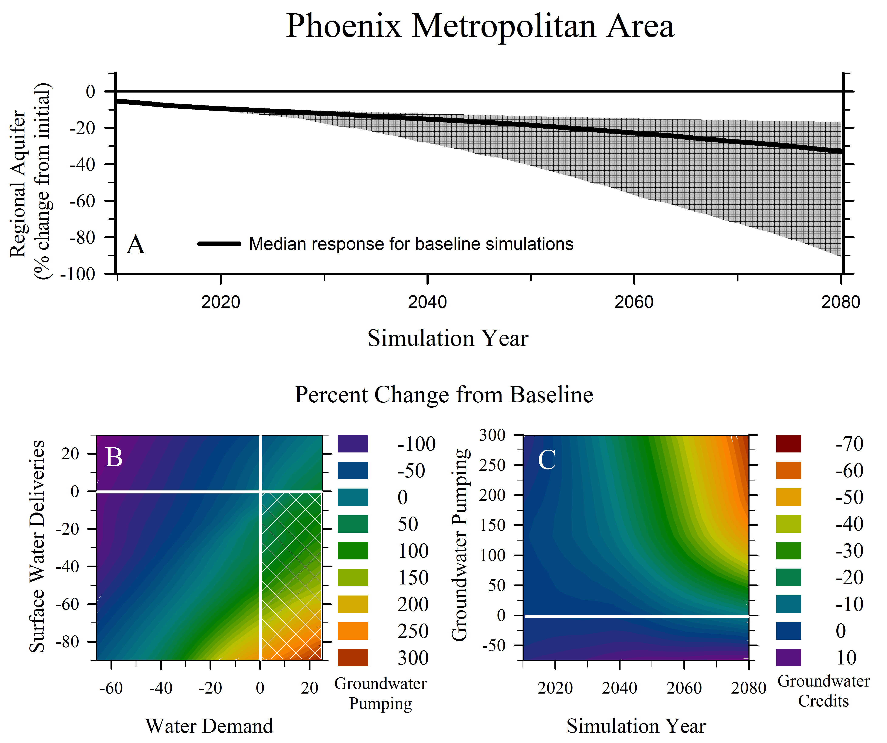
Caption: Adaptive Scenario Planning and WaterSim 5; Response envelopes.
Explaination: An example of hundreds of scenarios and tens of thousands of simulations looking at two response envelopes and their tipping points for two distinctly different water management strategies. One focuses on strong groundwater and demand management while the other, more expensive approach relies on new technologies yet to be fully utilized.
Adapted From: Analyses conducted in the preparation of Withycombe Keeler et al. (2015), Linking stakeholder survey, scenario analysis, and simulation modeling to explore the long-term impacts of regional water governance regimes.
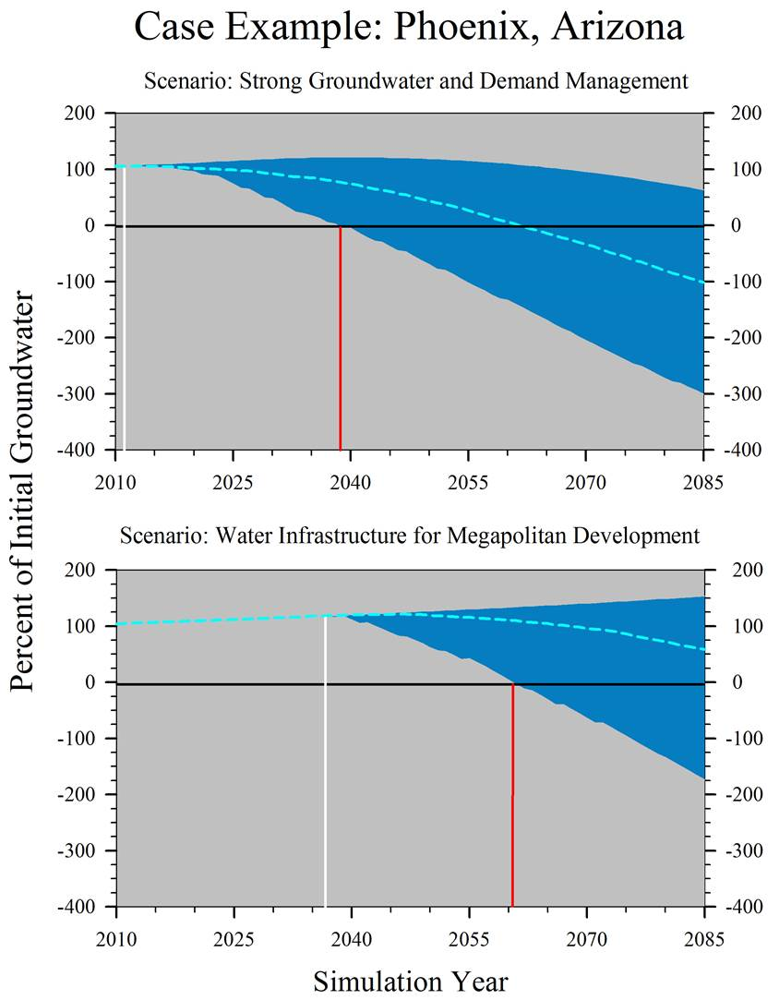
Caption: Management Scenarios and WaterSim 5; Groundwater.
Explaination: An example of hundreds of scenarios to examine simulated climate effects on riverine flows and the resulting impact on the percent demand met by groundwater and the change in the regional groundwater aquifer.
Adapted From: Withycombe Keeler et al. (2015), Linking stakeholder survey, scenario analysis, and simulation modeling to explore the long-term impacts of regional water governance regimes.
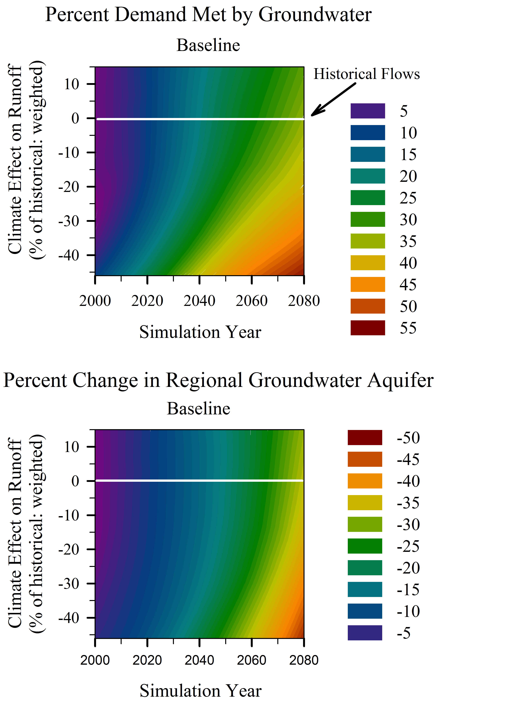
Publications
Published:
Gober, Patricia., Sampson, David A., Quay, Ray., White, Dave D.,& Chow, Winston T.L., 2016. Urban adaptation to mega-drought: Anticipatory water modeling, policy, and planning for the urban Southwest. Sustainable Cities and Society. http://dx.doi.org/10.1016/ j.scs.2016.05.001.
Sampson, D. A., R. Quay, D. D. White. 2016. Anticipatory modeling for water supply sustainability in Phoenix, Arizona. Environmental Science and Policy 55: 36-46. DOI: 10.1016/j/envsci.2015.08.014.
Quay, R. 2015. Planning for demand uncertainty in integrated water resource planning. Journal – American Water Works Association (JAWWA) 107(2):32-41.
White, D. D., A. Y. Wutich, K. L. Larson and T. Lant. 2015. Water management decision makers’ evaluations of uncertainty in a decision support system: The case of WaterSim in the Decision Theater. Journal of Environmental Planning and Management 58(4):616-630. DOI: 10.1080/09640568.2013.875892.
Withycombe Keeler, L.,A. Wiek, D.D. White and D.A. Sampson. 2015. Linking stakeholder survey, scenario analysis, and simulation modeling to explore the long-term impacts of regional water governance regimes. Environmental Science and Policy 48:237-249.
Gober, P., D.D. White, R. Quay, D.A. Sampson, and C.W. Kirkwood. 2014. Socio-hydrology modelling for an uncertain future, with examples from the USA and Canada. In Model Fusion: Integrating Environmental Models to Solve Real World Problems. Geological Society of London, Special Publications Series.
White, D.D. 2013. Framing water sustainability in an environmental decision support system. Society & Natural Resources 26(11):1365-1373. DOI: 10.1080/08941920.2013.788401.
Murray, A.T., P.D. Padegimas, P. Gober, L. Anselin, R.J. Sergio, D.A. Sampson. 2012. Spatial optimization models for water supply allocation. Water Resources Management 26(8): 2243-2257. DPI: 10.1007/s11269-012-0013-5.
Gober, P., E.A. Wentz, T. Lant, M.K. Tschudi, and C.W. Kirkwood. 2011. WaterSim: A simulation model for urban water planning in Phoenix, Arizona, USA. Environment and Planning B 38(2):197-215. DOI: 10.1068/b36075.
Sampson, D.A., V. Escobar, M.K. Tschudi, T. Lant and P. Gober. 2011. A provider-based water planning and management model—WaterSim 4.0—for the Phoenix Metropolitan Area. Journal of Environmental Management 92: 2596-2610.
Gober, P., and C.W. Kirkwood. 2010. Vulnerability assessment of climate-induced water shortage in Phoenix. Proceedings of the National Academy of Sciences USA 107(50):21295-21299.